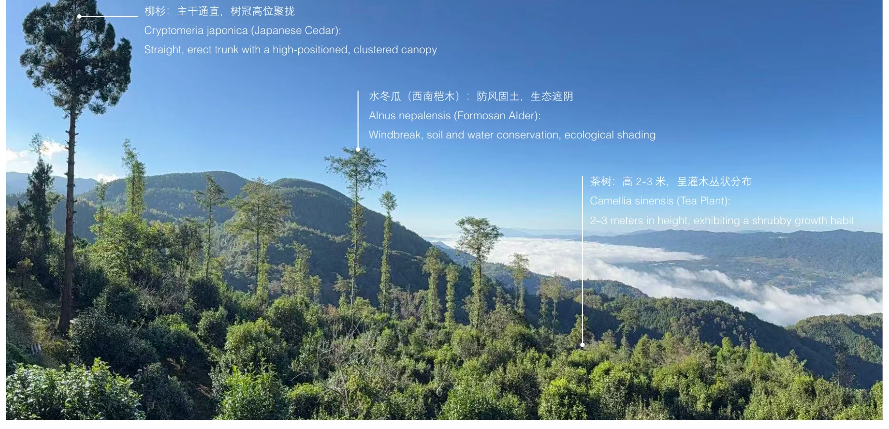

A Working Mountain
Tea production, access and the cost of a lighter footprint
The ancient trail will not regain continuity through scenery alone. Its future depends on the work, access and care that give people reasons to return.
The Yongchang Trail is read here as a territorial system rather than an isolated heritage route. At Fenglaoye Ancient Tea Garden, its continuity depends on the working relationships between the path, tea production and the forest. The architectural task is to repair those relationships with a degree of intervention that changes across the site.
Xu Tiantian / DnA · Begin with a productive relationship
Research question
How can architecture reconnect a fragmented historic trail, local production and ecological experience without turning the landscape into another object of development?
A route interrupted; a productive landscape still present.
The thesis locates Dahaoping on the Yongchang section of the Southern Silk Road. It traces the marginalisation of the mountain trail following the opening of the Baoshan–Tengchong road in 1952. Milestones, beacon towers and other dispersed traces remain, but their former network of movement and exchange has weakened. This is a break in relationships as much as a break in the path.
At Fenglaoye, the tea factory, old tea garden and existing accommodation are poorly connected in movement and visibility. Tea production nevertheless supplies a contemporary reason to use and care for this inherited landscape. The enquiry asks how productive continuity might sustain heritage without making tourism its only source of value.

The factory is an anchor, not a backdrop
Xu Tiantian’s Brown Sugar Factory in Songyang is a useful methodological comparison because an existing productive activity gives the architectural brief its substance. DnA describes production, village use and public observation within a shared building. I take from this the question of what an intervention enables people to keep doing, rather than borrowing its appearance. [G5]
At Fenglaoye, the tea factory should therefore be read as an operating anchor. The relation between factory, garden and accommodation is not merely a sequence of visitor experiences. It also concerns the movement of people and material, the distinction between work and leisure, and the attention demanded by cultivation. A visitor path is successful only if it can meet these activities without turning every productive space into a performance.
The comparison has a limit. A compact workshop and a dispersed mountain landscape distribute access and maintenance differently. Here, the connecting path itself is an extensive piece of infrastructure. The research must ask whether each new destination justifies the route, servicing and labour required to keep it open.

From a scenic itinerary to a working network.
Comparative fieldwork along the Via Francigena, undertaken with Politecnico di Torino, provided a different way of understanding a route. The graduation account describes food-producing workshops and stopping places as both economic activities and cultural encounters. Their significance lies in the connection between passage and production, rather than a repeated architectural style.
Transferred to Yunnan, this becomes a proposition to connect walking, ecological study and tea-making. The comparison suggests a network of exchanges, not a resort detached from its surroundings. Governance, land tenure and local economic conditions differ between the two contexts; the Italian observations do not demonstrate that the same operating model will work in Dahaoping.
The ICOMOS Cultural Routes Charter provides a wider frame for reading routes through exchange and connected heritage, while the joint Alpine programme extends that question to rural inhabitation. Neither requires the two landscapes to share the same architectural form. [G3] [G4]

Map sensitivity before assigning programme.
The site study combines GIS elevation and slope analysis, sightlines, vegetation mapping, existing facilities and access constraints. The thesis distinguishes the flatter northern ground from steeper southern tea woodland. Mapped trees and openings inform setbacks and possible footprints; views guide orientation, while unloading and transport requirements determine where more intensive activity can be accommodated.
Read together, these layers identify a gradient of intervention. The research finding is not simply that buildings should be small. Public use, privacy, access and ecological sensitivity require different degrees of presence in different parts of the landscape.
| Condition identified | Design inference | Architectural test |
|---|---|---|
| Flatter ground near arrival | Concentrate higher-frequency use at the edge | Public reception and orientation |
| Tea woodland and existing clearings | Work within gaps rather than clear a continuous platform | Dispersed accommodation and paths |
| Steeper, more sensitive southern ground | Reduce footprint and construction intensity | Point-supported lightweight units |
| Restricted material transport | Treat assembly as part of site planning | Small modules and dry connections |
Architecture becomes lighter as ecological sensitivity increases.


A small cabin can have a large territorial footprint
The footprint shown in plan is only one part of disturbance. Bringing components to a slope, installing foundations, supplying water, removing waste and replacing a failed element all require movement across the site. Several small buildings may distribute these demands over a larger area than a carefully located shared facility. “Small” is consequently an insufficient environmental criterion.
I read the proposal through a disturbance chain: access, installation, occupation, maintenance and eventual removal. The northern ground can accommodate more collective activity because access and terrain differ from the southern tea woodland. That is a conditional spatial argument, not a claim that the resulting construction is impact-free. Mapped trees need root-zone assessment; point foundations still require a site-specific installation strategy.
The same analysis produces a test for the network. If a distant unit cannot be serviced without repeatedly damaging a path or increasing vehicle access, its programme should be reduced, relocated or omitted. The right to leave a location unbuilt belongs inside the design method, rather than appearing only as an environmental qualification after the layout is fixed.
Architectural acupuncture, from network to joint.
A continuous walking sequence reconnects the factory, garden and dispersed activities. Public reception acts as a threshold, while small shelters and shared facilities supply places to stop. The network turns the path into an inhabited sequence without requiring a continuous building frontage.
At the construction scale, point foundations, raised floors and small-module dry assembly test how the ground can remain more continuous beneath the intervention. The cabin studies combine timber members, bracing and replaceable connections; shared bathing facilities introduce a proposed local water-treatment cycle. These are architectural hypotheses about reduced disturbance and maintenance, not measured ecological outcomes.
Where the public route stops
A connected landscape does not require universal access to every space. The factory, shared reception, accommodation and bathing facilities have different relationships to work, privacy and service. The design research asks where a common route should branch, where a threshold should slow movement and where a view can replace physical entry.
This differentiates continuity from exposure. A visitor can understand tea production without entering a work area; a guest can be connected to a shared facility without the room becoming part of a public promenade. The network is strongest when it makes these relationships readable. Its social success would depend on an operating agreement that protects production and allocates the benefits and costs of visitor use.
Continuity must also be operational.
The thesis identifies further work on microclimate, carbon accounting and wet-season wastewater maintenance. Root-zone protection, foundation installation, habitat disturbance and disassembly would need specialist assessment. Claims of “zero disturbance” or “zero pollution” are therefore treated here as ambitions rather than established results.
The unresolved social question is equally important: who operates the network, who benefits from tea-related tourism, and how can local production retain agency? The aim is not to restore the trail to what it was, but to rebuild the relationships that allow it to remain alive.
A WORKING MOUNTAIN
Field Research
Gaoligong Mountains, Yunnan
References
-
G3 / Reference
ICOMOS (2008). The ICOMOS Charter on Cultural Routes.
Ratified by the 16th General Assembly, Québec, 4 October 2008. Research and conservation of routes as interconnected cultural systems.
Read reference ↗ -
G4 / Reference
Fondazione Courmayeur Mont Blanc (2026). Ancient Trails and Their Possible Futures.
Joint Tsinghua University / Politecnico di Torino research programme; Courmayeur, 12–13 April 2026.
Read reference ↗ -
G5 / Comparative reference
DnA / Xu Tiantian. Brown Sugar Factory, Xing Village, Songyang.
Architect’s project account. Comparative reading of production, public access and an existing village economy.
Read reference ↗